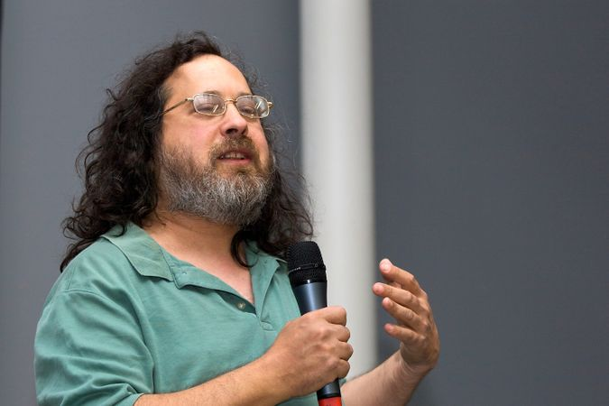
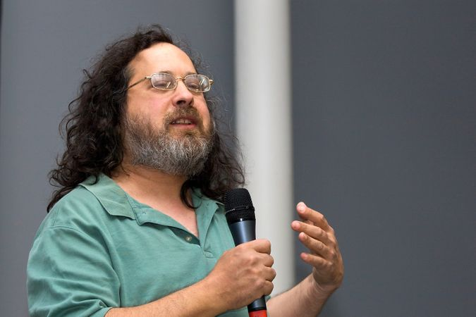

Richard M. Stallman
 
Richard Stallman giving a speech on "Free Software and your freedom" at the biennale du design of Saint-Étienne (2008)

Richard Stallman giving a speech on "Free Software and your freedom" at the biennale du design of Saint-Étienne (2008)
Richard Stallman, in full Richard Matthew Stallman, (born March 16, 1953, New York, New York, U.S.), American computer programmer and free-software advocate who founded (1985) the Free Software Foundation.
Stallman earned a bachelor’s degree in physics from Harvard University in 1974. In 1971, as a freshman at Harvard, he had begun working at the Artificial Intelligence Laboratory (later Computer Science & Artificial Intelligence Lab) at the Massachusetts Institute of Technology (MIT). There he wrote the Emacs text editor in the C computer programming language with James Gosling (who later developed Java).
In 1983 Stallman began working in his personal time on his GNU Project, or GNU operating system. GNU was intended to be a free version of AT&T’s UNIX, and the name GNU was created as a recursive acronym of GNU’s not UNIX. One of the last of the “hackers,” computer programmers who strongly believed in freely modifying and sharing computer code, Stallman left MIT in 1984 over concerns about changes to the university’s software copyright rules; however, he later returned as a visiting scientist.
In 1985 Stallman created the nonprofit Free Software Foundation, which initially focused on supporting his GNU Project. In 1990 he was awarded a MacArthur fellowship, the so-called “genius award” that gives recipients a substantial financial stipend with no strings attached. The award helped free Stallman to write various utilities for the GNU Project, such as the GNU Emacs editor, GNU compiler, and GNU debugger, which would later be combined with the kernel developed by Linus Torvalds, a Finnish computer science student, to produce the GNU/Linux, or Linux, operating system in 1994. Stallman’s GNU Emacs Manual, which has gone through numerous revisions, is freely available from the GNU Web site.
With the release of a free operating system, Stallman and the Free Software Foundation focused on promoting free software and the development of the GNU General Public License (GNU GPL), commonly known as a copyleft agreement, which gives authors a way to allow their works to be modified without releasing them to the public domain.
In 1999 Stallman published “The Free Universal Encyclopedia and Learning Resource,” a paper calling for the creation of an open-source encyclopaedia. Almost as soon as he set up the GNUpedia Project, another open-source encyclopaedia project, Nupedia, the predecessor of Wikipedia, appeared and adopted the GNU Free Documentation License, so the work on the GNUpedia Project was merged into Nupedia.
True to his hacker roots, Stallman continued to promote free software around the world, though he had limited success in convincing governments to move completely to free software. He was one of the principal people interviewed and profiled in the 2001 documentary Revolution OS by American director J.T.S. Moore.
In September 2019 Stallman attracted controversy after attempting to discredit an alleged victim of Jeffrey Epstein, a convicted sex offender. Later that month Stallman resigned from MIT and the Free Software Foundation.